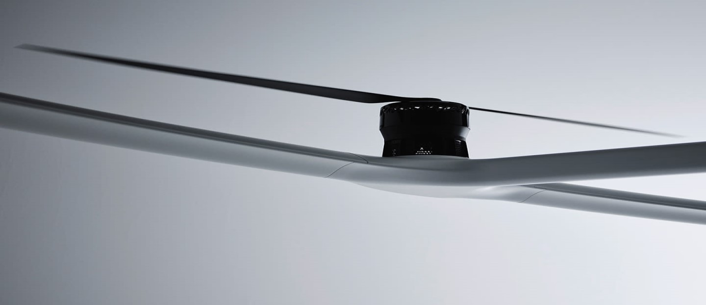
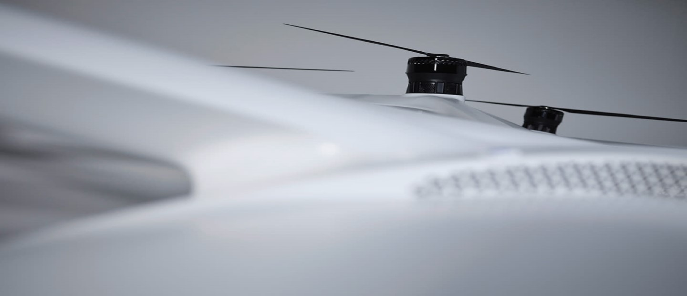
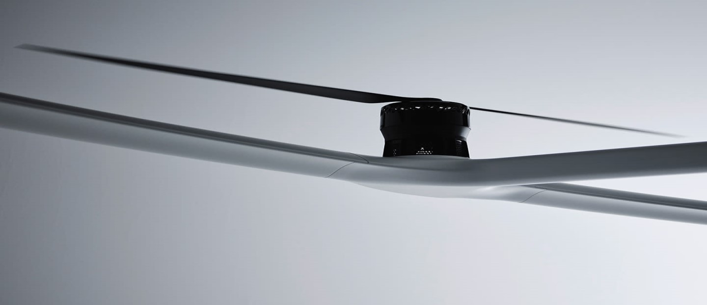
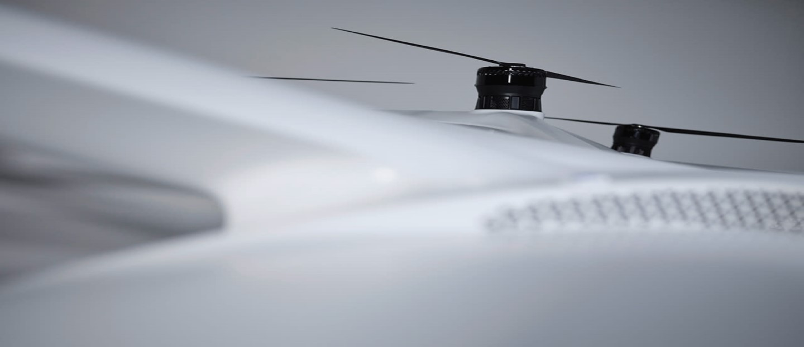

VoloDrone
O VoloDrone é nosso drone utilitário totalmente elétrico, sem rosca, capaz de transportar uma carga útil impressionante – e sem precedentes. Embora existam muitas sobreposições de design com o VoloCity, criamos o VoloDrone para oferecer serviços de transporte pesado a uma série de indústrias, e ele será implantado onde os modos de transporte clássicos atingirem seus limites.
VoloRegion
Na nossa missão de levar a mobilidade para o próximo nível, a VoloRegion irá além – literalmente. Nossa terceira aeronave eVTOL foi projetada para ser uma extensão de nossos serviços de táxi aéreo urbano VoloCity. A VoloRegion conectará a cidade aos subúrbios em um voo rápido, suave e livre de emissões, levando a experiência aérea urbana ainda mais longe.
VoloPort
Como hubs para nossas aeronaves de passageiros VoloCity e VoloRegion, esses vertiportos também serão utilizados por outras aeronaves UAM que compartilham o espaço aéreo inferior ao lado do nosso. Vários VoloPorts serão posicionados em áreas de grande movimento dentro de uma cidade, como aeroportos e estações de trem. Acreditamos que a experiência em infraestrutura que acumulamos internamente é um fator crucial de sucesso para a mobilidade aérea urbana.
 


